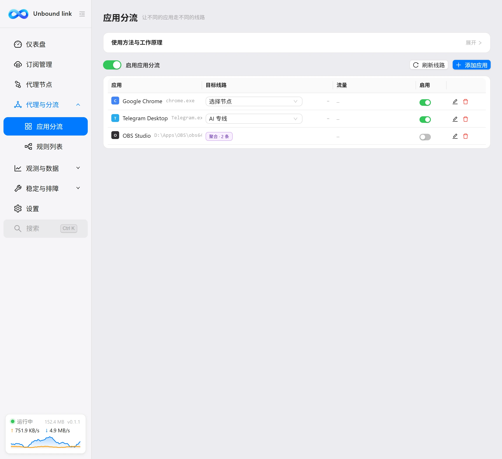
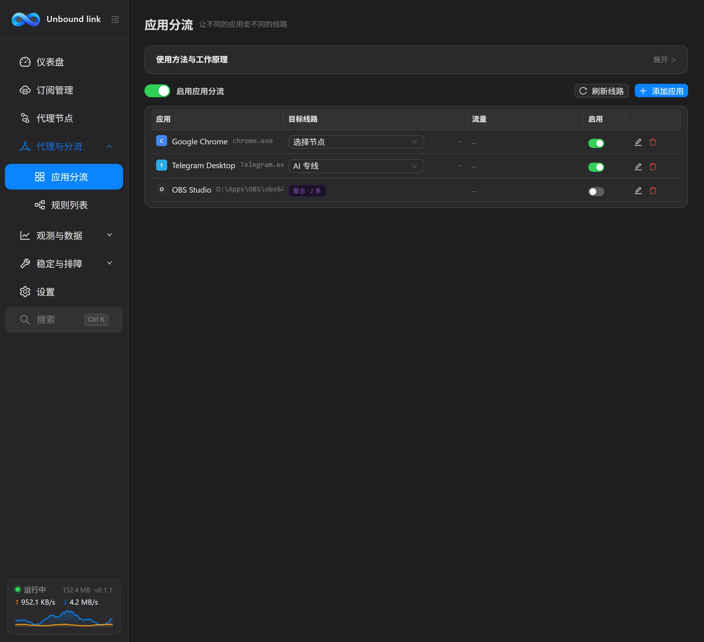

应用分流
让不同的应用走不同的线路：把浏览器、游戏、下载工具分别绑定到合适的线路，互不干扰。


页面副标题就是这句话——让不同的应用走不同的线路。顶部有「启用应用分流」总开关，默认关闭；表格上方有「添加应用绑定」按钮。总开关是这一页功能的入口，打开它之后，你在下面添加的绑定才会起作用。每一条绑定把「一个应用」和「一条或多条线路」连起来，此后该应用的流量就按这条绑定的线路走。
绑定表格
所有绑定以表格形式列出，每一行就是一条绑定规则。
| 列 | 含义 |
|---|---|
| 应用 | 显示图标与名称 / 进程名。 |
| 目标线路 | 可在行内直接切换线路。多条线路时显示聚合，说明「多连接自动分布到各线路；修改请点「编辑」」，并显示该线路最近一次延迟。 |
| 实时速率 | 该应用当前活跃连接的上行 / 下行，来自内核连接记录。 |
| 启用 | 开关，控制该条绑定是否生效。 |
| 操作 | 编辑、移除。移除需二次确认「移除该应用绑定？」。 |
目标线路这一列可以直接在行内点开切换，不必每次都进弹窗；只有多条线路的聚合需要修改时，才点「编辑」重新选择。实时速率这一列来自内核的连接记录，显示该应用当前活跃连接的上行与下行；连接关闭后就会归零，所以它反映的是「此刻」而不是累计用量。需要更新线路延迟时，用工具区的「刷新线路」类按钮。
添加应用绑定
点「添加应用绑定」打开弹窗，需要填写三部分：应用、匹配方式、目标线路。
| 字段 | 说明 |
|---|---|
| 应用 | 输入进程名（如 chrome.exe）或完整路径（如 C:\Games\game.exe）；有「选择程序文件」按钮可浏览选择 exe；还能从内核记录到该进程正在或刚刚发起网络连接的运行进程列表里直接挑选，列表带应用图标与窗口标题。 |
| 匹配方式 | 「按进程名（推荐）」或「按完整路径」。 |
| 目标线路 | 多选，选 2 条及以上会自动聚合提速。可选策略组、节点，以及两个固定项「直连（不走代理）」与「拒绝（阻断连接）」。 |
| 聚合策略 | 仅选 2 条以上线路时出现：「轮询分散」（多连接自动分布到各线路）或「会话保持」。 |
填「应用」时有三种办法：手输进程名、手输完整路径，或者点「选择程序文件」浏览到 exe。若你不确定该填什么，可以从那张「内核记录到该进程正在/刚刚发起网络连接」的运行进程列表里直接挑，列表带应用图标与窗口标题，比对着图标找人更容易。填好后按「匹配方式」决定怎么认这个程序：「按进程名（推荐）」写得短、对被移动或重装的程序更宽容；「按完整路径」则更精确。
目标线路与聚合
「目标线路」可以多选。可选的类型有策略组、节点，以及两个固定项：「直连（不走代理）」和「拒绝（阻断连接）」。选择 2 条及以上时，客户端会生成一个聚合组，多条线路同时服务该应用；若只选一条，就只走这一条。出现两条以上线路时，会再让你选「聚合策略」：「轮询分散」会把多连接自动分布到各线路，「会话保持」则让同一会话保持走同一条线。
常见的校验提示
保存失败时，弹窗会给出下面这些提示，按提示补齐即可：
| 提示 | 含义 |
|---|---|
| 请选择或输入应用进程 | 没有选应用。 |
| 请至少选择一条目标线路 | 没有选线路。 |
| 该应用已在绑定列表中 | 重复绑定。 |
| 聚合不支持「直连」与「拒绝」，已自动移除；如需直连请只选它一条 | 聚合里包含了「直连」或「拒绝」。 |
| 进程名或线路名含英文逗号 | 会给出提示，因为逗号要写入规则。 |
典型用法
浏览器走「自动选择」，游戏走「低延迟专线」，下载工具只选一条固定线路；也可以把某个聊天软件设为「拒绝」来阻断它联网。几条常见思路：追求稳定的程序绑单条线路，追求速度的程序绑多条线路做聚合，不需要走代理的程序绑「直连」，不想让它联网的程序绑「拒绝」。
应用分流只影响被绑定的进程，其余流量仍按规则列表处理；绑定依赖内核运行，内核没有运行时绑定不会生效。